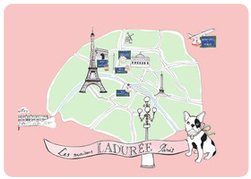

|  | Frequently-Asked Questions
|
- Q 생크림 보관방법과 거품을 잘내게 하는 방법을 알려주세요.
A. 생크림은 0℃~5℃의 냉장고에 보관하십시오.
반드시 유통기간을 지켜 사용하시는 것이 좋습니다.
사용후 남은 생크림은 설탕을 약간 가미한 후 휘핑해서 과일샐러드에 버무려 드시거나
비엔나 커피를 만들어 드셔도 좋습니다. 또한 거품을 잘 일어나게 하려면 겨울철은 괜찮지만 여름철에는 얼음물에 받쳐 휘핑하면 잘 됩니다.- Q 무염버터와 가염버터의 차이점과 활용방법을 알고 싶어요.
A. 가정에서 사용할때는 무염/가염을 구분해서 사용하는 것보다는 구분하기 쉬운 가염버터를 사용하시고 배합에 소금이 들어 갈때는 소금의 양을 아주 소량 넣어주십시오.
그게 아니라면 그냥 사용하셔도 됩니다.- Q 마카롱 만들때 꼭 필요한 도구가 무엇인 알려주세요.
▲ 핸드믹서
생크림을 만들 때, 달걀 거품 낼 때 손으로 젓는 거품기 대신 사용하는 것으로 자동이기 때문에 편하게 사용할 수 있다.
빠른 시간에 거품을 많이 내야 할 경우나 섞기 힘든 재료를 섞을 때 사용하면 편리하다.
▲ 계량컵
케이크나 쿠키를 만들 때 가장 중요한 것이 재료의 양을 정확하게 계량하는 것이다.
이를 위해서 반드시 필요한 것이 계량컵. 밀가루나 설탕의 양을 잴 때 유용하다.
▲ 스패툴러
케이크에 크림을 바르거나 생크림 케이크를 접시에 옮길 때 사용하면 편하다.
파이나 피자와 같이 부채꼴 조각을 뜨기에 적합하다.
생크림으로 장식할 경우 표면과 측면을 매끈하게 다듬는데 사용하면 편하다.
▲ 모양틀
머핀 등을 만들 때 필요한 모양틀. 달걀 푸딩 등을 만들 때 사용해도 좋다.
틀의 안쪽이 코팅된 것으로 구입하면 나중에 설거지하기도 편하다.
▲ 계량유리컵
우유 등의 양을 잴 때 사용하면 편한 유리 계량컵.
200∼250cc 크기가 편리하고 눈금을 보기 쉽도록 투명한 것을 준비한다.
▲ 유산지
빵이나 쿠키 등을 구울 때 팬에 반죽이 달라붙는 것을 방지하기 위해 종이에 기름을 바른 유산지를 사용한다. 컵모양은 머핀 등을 구울 때 사용하고 넓은 모양은 팬 모양대로 잘라 사용한다.
▲ 밀대
반죽을 만들어놓은 다음 그것을 쿠키 모양틀로 찍어내기 전에 밀대로 밀어준다.
밀대의 지름은 3∼4cm 정도, 길이는 30∼40cm 정도가 적당하다.
한번 사용한 다음에는 깨끗이 씻어서 그늘에 말린다.
▲ 거품기
핸드 믹서가 없을 경우 사용하는 거품기. 달걀 흰자를 거품내거나 휘핑크림을 만들 때 사용한다.
▲ 체
빵이나 쿠키를 만들 때 밀가루는 꼭 체에 두어 번 내려야 한다.
그래야 밀가루 속에 공기가 들어가서 더욱 부드러운 맛을 느낄 수 있다.
컵 모양의 체는 밀가루를 넣고 손잡이를 누르듯이 하면 밀가루가 체쳐져 편리하다.
▲ 볼
버터를 크림 상태로 만들거나 달걀 거품을 낼 때, 생크림을 만들 때 사용하면 편하다.
일반적으로 플라스틱 볼보다 스테인리스 볼이 거품도 더 잘나고, 반죽도 더 잘된다.
3개 정도를 크기대로 준비해 두고 사용한다.
▲ 계량스푼
베이킹파우더나 소금 등의 양이 적은 재료를 잴 때 사용하는 것이 계량 스푼.
계량스푼은 1큰술은 15cc, 1작은술은 5cc이다.
▲ 짤주머니 & 모양깍지
거품 낸 생크림을 담아서 케이크 위에 장식할 때 사용하면 편하다.
짤주머니 끝에 끼우는 모양깍지에 따라 여러가지 장식을 만들 수 있다.
▲ 고무주걱
쿠키나 케이크의 재료를 섞을 때 숟가락이나 손으로 하는 것보다 주걱을 이용하면 반죽이 질겨지지 않는다. 또한 그릇에 남은 반죽을 깨끗하게 쓸어 담을 때 사용해도 된다.
▲ 쿠키 모양틀
쿠키 모양을 찍어내는 틀은 동그란 모양이나 네모 모양 등과 같이 단순한 것부터 별, 하트, 동물 모양까지 다양하다. 한가지의 반죽으로 다양한 모양의 쿠키를 만들 수 있다.
- Q 제과제빵 재료와 필요한 도구를 살수있는곳을 알려주세요.
유암산업(케익&파티) http://www.cakeplaza.co.kr
다모아(케익 악세사리) http://www.cakedamoa.co.kr
진기획(숫자양초)http://www.yescall.co.kr/jincom
(주)삼립웰가http://www.wellga.com
서울하인즈 http://www.heinz.co.kr
(주)삼양사 http://www.samyang.com
방산시장-종로5가 7번 출구/리치몬드상가-대치동- Q 웰빙 브레드를 더 맛있게 먹을 수 있는 방법을 알고 싶어요.
A. 건강한 몸과 건강한 정신을 생각하여 웰빙음식을 많이 찾는데요,
웰빙 브레드라하면 유기농 우리밀 빵, 호밀을 발효시켜 구운 빵, 통호밀을 이용하여 구운 빵등 다양한 제품들이 많이 나오고 있습니다.
웰빙 브레드는 설탕이나, 화학첨가제등의 사용을 안하여 쉽게 즐겨먹기가 어렵습니다.
그런 빵들을 그냥 드시는 것보다 얇게 슬라이스해서 올리브유나 마카다미아오일, 아보카도 오일 등을 발라 과일이나 야채를 곁들여 드시면 맛과 영양을 동시에 충족시켜 줍니다.- Q 마카롱을 구울때 잘 부풀게 하려면 어떻게 해야하나요?
A. 마카롱 반죽을 매끄럽고 탄력있게 해야 잘 부풉니다. 그리고 정확한 공정을 지켜야 합니다.
- Q 빵과 과자 만들때 넣으면 좋은 견과류에는 무엇이 있는지 알려주세요.
▣ 아몬드
고소한 맛때문에 좋아하는 사람이 많은 아몬드.
얇게 썬 아몬드 슬라이스는 빵이나 과자의 표면에 얹어서 구우면 보기에도 좋고 고소한 맛도 낸다.
가는 입자로 갈아만든 아몬드가루는 과자나 빵 반죽에 직접 넣어서 사용한다.
▣ 코코넛
독특한 향과 씹히는 맛이 일품인 코코넛. 가루로 된 것과 약간의 입자가 있는 코코넛파인, 길게 썰어 만든 코코넛롱이 있다. 가루는 반죽에 직접 넣어 향을 내고 파인이나 롱은 과자나 빵, 케이크의 표면에 뿌리는 경우가 많다.
▣ 크렌베리
딸기의 일종으로 시고 상큼한 맛이 난다. 케이크 사이에 생크림과 함께 넣거나 윗면을 장식하는 데 많이 이용한다. 쿠키 반죽에 넣어 새콤달콤하면서도 색깔 고운 쿠키를 만들어도 좋다.
▣ 건포도
과자의 풍미를 좋게하기 위해 넣는 건포도.
사용하기 전에 물에 10분 정도 담가두면 부드러워지고 건포도 주름사이에 묻은 먼지와 잡티도 없앨 수 있어 좋다 .럼주에 담가두었다가 사용하면 향이 더해져 맛이 더욱 좋아진다.
▣ 호박씨
여러가지 영양소가 고루 들어있는 호박씨. 다른 견과류와 마찬가지로 잘게 다져 빵이나 쿠키반죽에 넣기도 하고 쿠키표면에 올려 굽기도 한다.
▣ 오트밀
몸에 좋은 오트밀. 다소 입자가 거칠지만 쿠키나 빵 반죽에 넣어 만들면 담백하고 고소한 맛을 즐길 수 있다. 오트밀 식빵은 아침식사로 먹으면 건강에 좋다.
▣ 검은깨
건강에 좋은깨. 특히 검은깨를 넣어 만든 쿠키나 과자는 어른들이 좋아한다.
달지 않고 고소하게 구워 어른들께 선물해도 좋다.
▣ 오렌지 필
오렌지 껍질을 잘게 다져 설탕에 조린것. 케이크나 쿠키 반죽에 넣어 새콤달콤한 맛을 더한다. 집에서 만들어도 되고 제과·제빵 재료점에서 구입해도 된다.
▣ 호두
호두를 넣어 빵이나 과자를 만들때는 호두를 잘게 다지거나 약간 덩어리가 있도록 부수어서 반죽에 넣는다. 호두는 속껍질이 황금색이 나는 것이 좋다.- Q 쿠키와 케이크 맛있게 만드는 기초상식을 알려주세요.
▲ 빵의 종류에 따라 다른 밀가루를 사용해야 한다.
밀가루 중에서 강력분은 단백질의 함량이 높고 탄력성이 좋아서 식빵이나 파이를 만들 때 주로 쓴다. 박력분은 단백질의 함량이 적어 바삭한 과자나 케이크를 만들 때 사용하면 적당하다. 중력분은 튀김옷이나 바게트빵 등을 만들기에 알맞다.
▲ 거품을 낼 때는 한 방향으로 계속 저어야 한다.
빵이나 과자에 들어가는 달걀은 충분히 거품을 내야 반죽이 매끄럽고 맛도 좋다.
요즘은 거품기가 있어 쉽게 거품을 내지만 거품기가 없을 경우는 거품체를 이용하여 한방향으로 계속 저어가면서 거품을 내야 거품이 잘 생긴다.
▲ 이스트를 두번 발효시키면 빵이 더욱 폭신해진다.
부풀어 오른 빵이 탐스러워 보이도록 하려면 이스트나 베이킹파우더를 넣고 발효를 시켜야 한다.
이스트는 보온밥통에 넣어 따뜻한 온도에서 충분히 발효시키는데 두번 발효시키면 더욱 폭신한 빵을 즐길수 있다.
▲ 선물을 할 때 데커레이션 장식을 이용한다.
선물용으로 과자나 케이크를 만들 때는 아몬드, 땅콩 등 다양한 맛을 내는 재료를 듬뿍 넣어준다.
그외에 색색의 사탕이나 초콜릿으로 예쁘게 장식한다면 제과점에서 파는 것 못지않은 맛과 모양을 낼 수 있다.
▲ 유산지와 종이컵을 다양하게 사용한다.
케이크를 만들 때 오븐팬의 안쪽에 유산지를 깔면 케이크가 팬에 붙지 않아서 편리하다.
오븐 없이 과자나 케이크를 만들 때 팬에 유산지를 깔고 약불에서 서서히 익히는 방법이 있다. 종이컵도 머핀이나 컵케이크를 만들 때 사용하면 유용하다.- Q 지점은 어디에 있나요?
A. 현재 프랑스 파리, 영국, 미국, 일본, 두바이등 세계 전지역에서 여행 중에 찾아 보실 수 있습니다. 한국에는 신라호텔에서만 운영 중입니다. 향 후 더 많은 매장으로 고객님을 찾아 뵙겠습니다.
- Q Laduree 상품권을 따로 판매 하나요?
A. 현재 발행된 Laduree 상품권은 없습니다. 향 후 발행 여부 결정되면 별도로 안내를 드리겠습니다.
- Q 기념일 메뉴는 뭔가요?
A. 기념일 메뉴는 생일을 맞이한 고객님을 위해서 생일/기념일이신 분 에께 한정 판매하고 있는 특별 메뉴입니다. 기념일이 아닌 분들께는 판매 되고 있지 않습니다.
원활한 절차 확인을 위해서 신분증 지참 부탁드립니다.